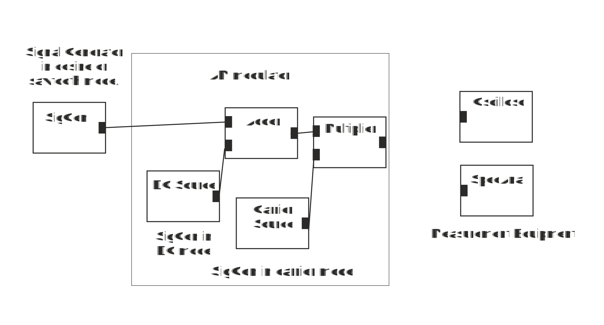

Make a block diagram shown in figure below. Signal Generator in cosine or sawtooth mode produces actual information signal to be transmitted with the help of the carrier waveform. DC-source gives DC-offset that is needed to produce full carrier AM. Modulated signal that is transmitted over transmission path to the receiver is produced by the multiplier node.
AM Modulator
1. Connect oscilloscope to carrier source and measure its period. It is
2. This corresponds to carrier frequency.
4. Set Signal Generator to cosine mode with frequency 10 and amplitude 1 and DC source to value 1. Connect oscilloscope to Signal Generator. What is the period of the modulating signal?
5. What is the corresponding frequency?
6. Use spectrum Analyzer to measure frequency of Signal generator. It is
7. Which output signal corresponds to the actual message or information signal to be transmitted with the help of the carrier?
8. Which output signal represents AM modulated signal to be transmitted to the transmission channel?
9. Look at the modulated carrier wave at the output of the modulator. Output waveform of the Signal Generator (message) changes carrier’s
10. What is the modulation index or depth when cosine waveform amplitude is 1V and DC offset 1 V?
11. Reduce Signal Generator’s output amplitude to 0.5 V. What is the modulation index now?
12. Increase cosine waveform amplitude to 2 V. Does AM still work properly, i.e., does the envelope follow message?
13. What has happened?
14. Set Signal Generator amplitude to 1 V, frequency to 10 Hz and look at the modulator output with Spectrum Analyzer. Spectrum contains frequency components:
16. Increase frequency of the Signal Generator to 20 Hz. What is now the distance between carrier and upper or lower sideband frequencies?
17. What is the required bandwidth of the channel to pass though whole AM spectrum when signal generator frequency is 20 Hz?
18. What is the required bandwidth of the channel to pass though whole AM spectrum when signal generator (message) frequency is 10 Hz?
19. What happens to required bandwidth when message frequency is increased?
20. How much lower are sideband component levels compared to carrier component when modulation index is 100%? Use spectrum analyzer.
21. Change Signal Generator amplitude so that modulation index is 50 %. How much lower are sideband components now compared to the carrier component?
22. Set signal generator to sawtooth or triangular mode and look at the output of the modulator with oscilloscope. Envelope of the modulated signal has shape of
When you have answered all the questions you can submit your answers.
You passed test. You may now start Exercise 2: Impact of LPF on Signal Shape and Spectrum
Test failed. Consider again answers tat are not correct